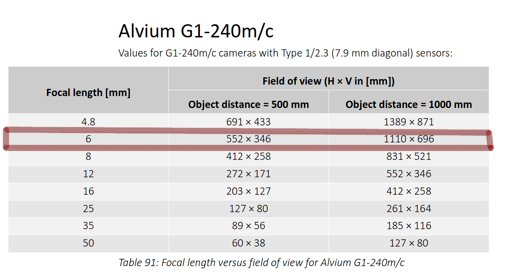
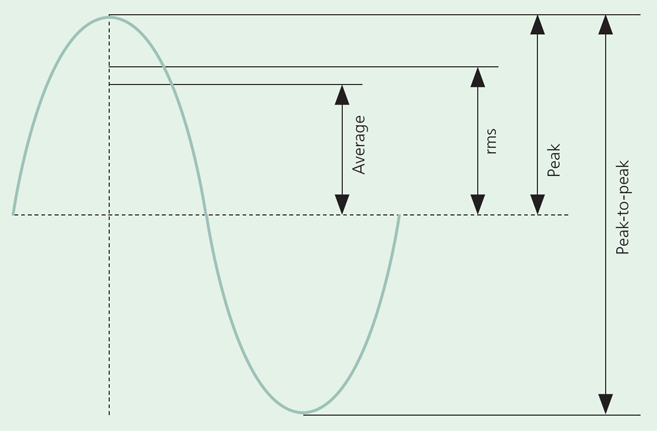
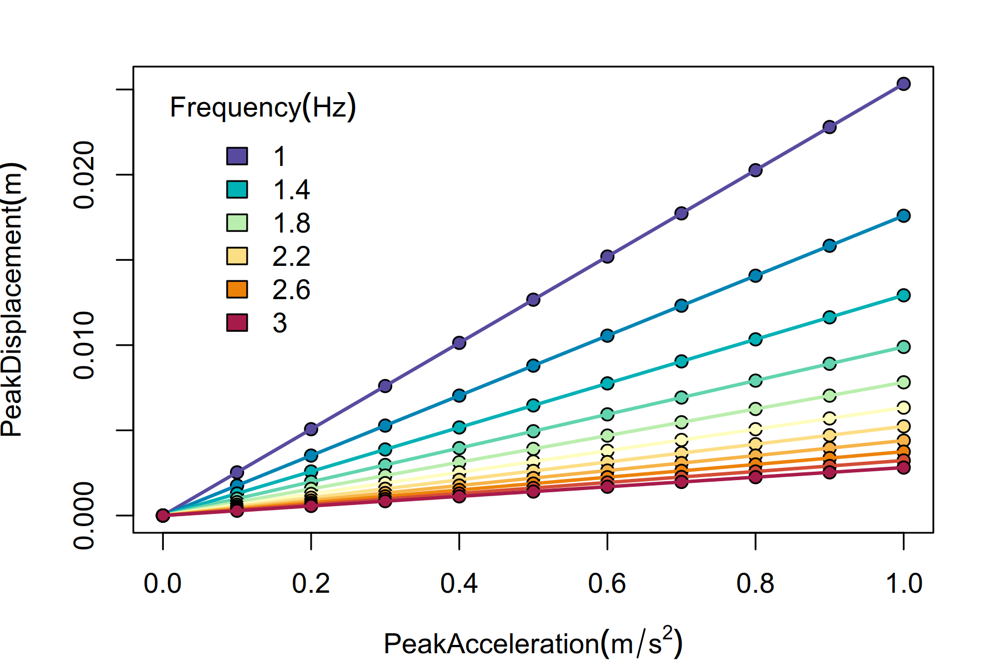

ssh ...

Create an organization account on GitHub, e.g. EcoNetLab
Should come soon into an open source repository.
Help with the computer network:
Ask IT to store it in a long-term storage option with DOI

\[ Avg = \frac{2}{\pi} Peak \]
\[ RMS = \frac{Peak}{\sqrt{2}} \]
\[ \text{Crest factor} = \frac{Peak}{RMS} \]
\[ \text{Form factor} = \frac{RMS}{Avg} \]
The displacement \(x(t)\) (\(m\)) at time \(t\) (\(s\)) is given by: \[ x(t) = X \sin{2 \pi f t} \] where \(X\) is the peak displacement and \(f\) the frequency (\(Hz\)).
The acceleration \(a(t)\) (\(m / s^2\)) is given by: \[ a(t) = -(2 \pi f)^2 x(t) = - (2 \pi f)^2 X \sin{2 \pi f t} \]
Therefore, the peak displacement is given by: \[ X = \frac{A}{(2 \pi f)^2} \] where \(A\) is peak acceleration
From the above, two different frequencies \(f_1\) and \(f_2\) give the same peak displacement if and only if: \[ \frac{A_1}{A_2} = \left( \frac{f_1}{f_2}\right)^2 \]

The system is built in two frames connected by vibration isolators. The bottom ballast frame consists of a ballast steel plate to dampen the vibrations transmitted by the fridge wall and floor. The top isolated frame consists of a sound-proof frame that contains the experimental arena and the sensors. Vibration isolators are inserted below the ballast frame as well as between the two frames. The camera is firmly attached to the isolated frame, as to have the same reference system of the arena.
The two frames will have roughly the same dimensions, with the isolated frame being slightly smaller than the ballast frame in order to allow the mounting the isolators. The depth (\(D)\) of the fridge is smaller than its width and is the limiting factor of the frame design. Because \(D = 59cm \), in order to leave a buffer distance of \(d = 1.5cm\) from the walls of the fridge, the two frames will be of \(56cm\) in width (\(W\)) and depth. The dimensions of the ballast frame are thus:
Because the field of view of the camera at 80 cm distance is around \(88 \times 55 cm\), for a 20cm tall arena, the camera should be placed at 100cm from the arena floor, to be able to capture the whole arena ceiling. The camera can be attached around 8 cm behind the lens and, thus, a length of \(10cm\) should be added to the height of the isolated frame to have a reasonable safety buffer. A sound absorbing layer of acoustic foam of \(2.5cm\) will be attached to the inner wall of the isolated frame. The frame itself is made of hollow squared steel beams of \(2.5 \times 2.5 cm\) and with a wall thickness of \(2mm\). The dimensions of the isolated frame are thus:
This will fit a circular arena of outer diameter of \(50cm\).